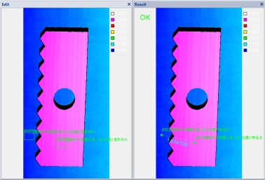
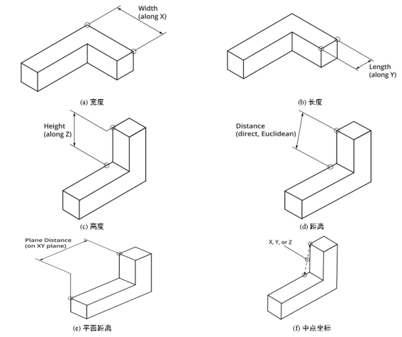

Trong đo lường 3D, thường cần định vị các điểm đặc trưng của dữ liệu độ sâu trong hai vùng kiểm tra của ảnh độ sâu, đồng thời đo thông tin kích thước giữa hai điểm đặc trưng này. Hình 1 thể hiện thông tin khoảng cách chiều cao giữa các điểm đặc trưng trung bình trong hai vùng kiểm tra.

| Phân loại | Tên tham số | Mô tả tham số |
|---|---|---|
| Cửa sổ thuộc tính | Chế độ điểm đặc trưng vị trí 1 | Bao gồm hai loại: kiểm tra và tham chiếu, có thể kiểm tra theo thời gian thực hoặc tham chiếu điểm đặc trưng của công cụ khác làm đầu vào. |
| Phương thức tạo ROI vị trí 1 | Bao gồm ba chế độ: định vị, ROI cố định, điểm tham chiếu; chế độ điểm tham chiếu sẽ thiết lập hệ tọa độ sản phẩm dựa trên điểm tham chiếu và đường thẳng tham chiếu trong liên kết dữ liệu. | |
| Lượng offset cố định X | Trong chế độ điểm tham chiếu, tọa độ X của vị trí tham chiếu ROI trong hệ tọa độ sản phẩm đã thiết lập, đơn vị: mm. | |
| Lượng offset cố định Y | Trong chế độ điểm tham chiếu, tọa độ Y của vị trí tham chiếu ROI trong hệ tọa độ sản phẩm đã thiết lập, đơn vị: mm. | |
| Loại ROI vị trí 1 | Vùng kiểm tra thứ 1, chia thành 3 loại: toàn bộ ảnh, hình chữ nhật, hình chữ nhật affine. | |
| Loại đặc trưng vị trí 1 | Lấy thông tin tọa độ 3D của điểm đặc trưng 1 theo loại đặc trưng của dữ liệu độ sâu. |
|
| Giới hạn trên, dưới của khoảng vị trí 1 | Dữ liệu độ sâu trong vùng đo được sắp xếp theo thành phần Z từ nhỏ đến lớn, sau đó lấy giá trị trung bình, trung vị và các điểm đặc trưng khác của dữ liệu độ sâu nằm trong khoảng start% ~ end%. Phạm vi giá trị là giới hạn dưới [0,100), giới hạn trên (0,100], và giới hạn dưới nhỏ hơn giới hạn trên. | |
| Chế độ điểm đặc trưng vị trí 2 | Bao gồm hai loại: kiểm tra và tham chiếu, có thể kiểm tra theo thời gian thực hoặc tham chiếu điểm đặc trưng của công cụ khác làm đầu vào. | |
| Phương thức tạo ROI vị trí 2 | Bao gồm ba chế độ: định vị, ROI cố định, điểm tham chiếu; chế độ điểm tham chiếu sẽ thiết lập hệ tọa độ sản phẩm dựa trên điểm tham chiếu và đường thẳng tham chiếu trong liên kết dữ liệu. | |
| Lượng offset cố định X | Trong chế độ điểm tham chiếu, tọa độ X của vị trí tham chiếu ROI trong hệ tọa độ sản phẩm đã thiết lập, đơn vị: mm. | |
| Lượng offset cố định Y | Trong chế độ điểm tham chiếu, tọa độ Y của vị trí tham chiếu ROI trong hệ tọa độ sản phẩm đã thiết lập, đơn vị: mm. | |
| Loại ROI vị trí 2 | Vùng kiểm tra thứ 2, chia thành 3 loại: toàn bộ ảnh, hình chữ nhật, hình chữ nhật affine. | |
| Loại đặc trưng vị trí 2 | Lấy thông tin tọa độ 3D của điểm đặc trưng 2 theo loại đặc trưng của dữ liệu độ sâu. | |
| Loại đặc trưng kích thước | Loại kích thước của dữ liệu độ sâu, dùng để tính khoảng cách hoặc trung điểm của hai điểm đặc trưng, chia thành 6 loại: chiều rộng, chiều dài, chiều cao, khoảng cách Euclid, khoảng cách mặt phẳng, trung điểm. |
|
| Bù hệ số | Bù hệ số cho kết quả đo, thông thường là 1, dùng để bù sai số hệ thống như tạo ảnh. | |
| Bù cố định | Bù cố định cho kết quả đo, thông thường là 0, dùng để bù sai số hệ thống như tạo ảnh. | |
| Giới hạn dưới phạm vi ngưỡng | Giá trị giới hạn dưới của điều kiện phán định, phạm vi giá trị: [-100000,100000], đơn vị: mm. | |
| Giới hạn trên phạm vi ngưỡng | Giá trị giới hạn trên của điều kiện phán định, phạm vi giá trị: [-100000,100000], đơn vị: mm. | |
| Cửa sổ ảnh | Ảnh độ sâu | Hiển thị ảnh độ sâu cần kiểm tra, hiển thị dưới dạng ảnh giả màu. |
| Vùng kiểm tra | Hiển thị vùng kiểm tra của vị trí 1 và vị trí 2 trên ảnh. | |
| Liên kết dữ liệu | Ảnh độ sâu đầu vào | Nhập ảnh độ sâu cần kiểm tra. |
| Biến đổi tuyến tính 2D | Phép biến đổi tịnh tiến, xoay, co giãn của mục tiêu so với mẫu. | |
| Điểm tham chiếu | Lấy điểm này làm gốc để thiết lập hệ tọa độ sản phẩm. | |
| Đường thẳng tham chiếu | Khi góc của đường thẳng gần nằm ngang, đường thẳng này được dùng làm trục X, nếu không thì dùng làm trục Y. | |
| Đương lượng pixel | Khi thiết lập hệ tọa độ sản phẩm, tức là offset cố định X và offset cố định Y trong thuộc tính sẽ dựa vào đây để suy ngược ra khoảng cách ảnh, đơn vị: mm/pixel. | |
| Giao diện nâng cao | Không | Không |
| Phân loại | Tên tham số | Mô tả tham số |
|---|---|---|
| Cửa sổ giám sát | Ảnh độ sâu đầu vào | Chiều dài, chiều rộng và kích thước pixel của ảnh đầu vào, cũng như tham số dữ liệu độ sâu. |
| Vị trí 1 | Thông tin tọa độ 3D của điểm đặc trưng trong vùng kiểm tra thứ 1. | |
| Vị trí 2 | Thông tin tọa độ 3D của điểm đặc trưng trong vùng kiểm tra thứ 2. | |
| Kết quả kích thước | Chiều rộng/chiều dài/chiều cao/khoảng cách Euclid/khoảng cách mặt phẳng/trung điểm giữa hai điểm đặc trưng. | |
| Kết quả thực thi | Kết quả thực thi công cụ. | |
| Thời gian thực thi | Thời gian thực thi công cụ. | |
| Cửa sổ ảnh | Ảnh độ sâu đầu vào | Hiển thị ảnh độ sâu được kiểm tra, hiển thị dưới dạng ảnh giả màu. |
| Điểm đặc trưng, khoảng cách/trung điểm | Hiển thị kết quả điểm đặc trưng, và khoảng cách hoặc trung điểm giữa hai điểm đặc trưng. | |
| Liên kết dữ liệu | Ảnh | Giống với tham số trong cửa sổ giám sát, dùng cho các công cụ phía sau. |
Step 1 Thiết lập vùng kiểm tra và loại đặc trưng dữ liệu độ sâu
Để lấy thông tin tọa độ 3D của điểm đặc trưng trong dữ liệu độ sâu, cần thiết lập vùng kiểm tra và loại đặc trưng dữ liệu độ sâu. Trong đó, vùng kiểm tra có 3 loại: toàn bộ ảnh, hình chữ nhật, hình chữ nhật affine; còn loại đặc trưng dữ liệu độ sâu có 9 loại: giá trị trung bình, trung vị, tâm khối, X lớn nhất, X nhỏ nhất, Y lớn nhất, Y nhỏ nhất, Z lớn nhất, Z nhỏ nhất.
Giá trị trung bình: giá trị trung bình của tọa độ (X,Y,Z) của tất cả dữ liệu độ sâu trong vùng kiểm tra.
Trung vị: trung vị của tọa độ (X,Y,Z) của tất cả dữ liệu độ sâu trong vùng kiểm tra.
Tâm khối: tâm khối của tọa độ (X,Y,Z) của tất cả dữ liệu độ sâu trong vùng kiểm tra.
Giá trị X lớn nhất: thông tin tọa độ của dữ liệu độ sâu tương ứng với tọa độ X lớn nhất trong tất cả tọa độ dữ liệu độ sâu (X,Y,Z) trong vùng kiểm tra.
Giá trị X nhỏ nhất: thông tin tọa độ của dữ liệu độ sâu tương ứng với tọa độ X nhỏ nhất trong tất cả tọa độ dữ liệu độ sâu (X,Y,Z) trong vùng kiểm tra.
Giá trị Y lớn nhất: thông tin tọa độ của dữ liệu độ sâu tương ứng với tọa độ Y lớn nhất trong tất cả tọa độ dữ liệu độ sâu (X,Y,Z) trong vùng kiểm tra.
Giá trị Y nhỏ nhất: thông tin tọa độ của dữ liệu độ sâu tương ứng với tọa độ Y nhỏ nhất trong tất cả tọa độ dữ liệu độ sâu (X,Y,Z) trong vùng kiểm tra.
Giá trị Z lớn nhất: thông tin tọa độ của dữ liệu độ sâu tương ứng với tọa độ Z lớn nhất trong tất cả tọa độ dữ liệu độ sâu (X,Y,Z) trong vùng kiểm tra.
Giá trị Z nhỏ nhất: thông tin tọa độ của dữ liệu độ sâu tương ứng với tọa độ Z nhỏ nhất trong tất cả tọa độ dữ liệu độ sâu (X,Y,Z) trong vùng kiểm tra.
Step 2 Thiết lập loại kích thước dữ liệu độ sâu
Để lấy thông tin khoảng cách hoặc tọa độ trung điểm giữa các điểm đặc trưng của dữ liệu độ sâu, cần thiết lập loại kích thước của dữ liệu độ sâu. Loại kích thước của dữ liệu độ sâu có 6 loại: chiều rộng, chiều dài, chiều cao, khoảng cách Euclid, khoảng cách mặt phẳng, trung điểm, như hình 2.

Step 3 Thực hiện đo và xuất kết quả
Sau khi đã thiết lập vùng kiểm tra, loại đặc trưng dữ liệu độ sâu và loại kích thước dữ liệu độ sâu, có thể thực hiện đo. Kết quả đầu ra bao gồm thông tin tọa độ 3D của hai điểm đặc trưng, thông tin kích thước giữa hai điểm đặc trưng hoặc thông tin tọa độ trung điểm của chúng.
Không
Tham khảo “\Samples\3D\深度图\3D测量工具.gvp”.